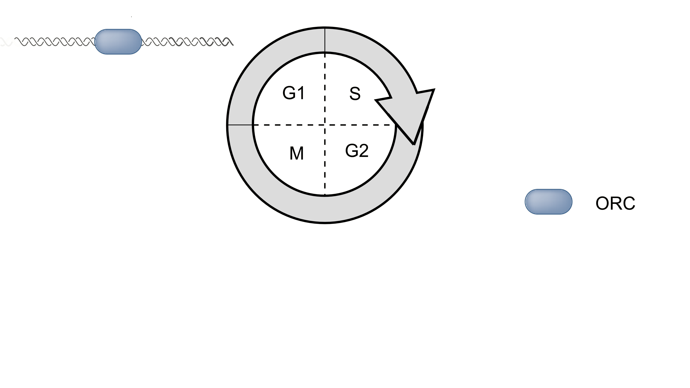
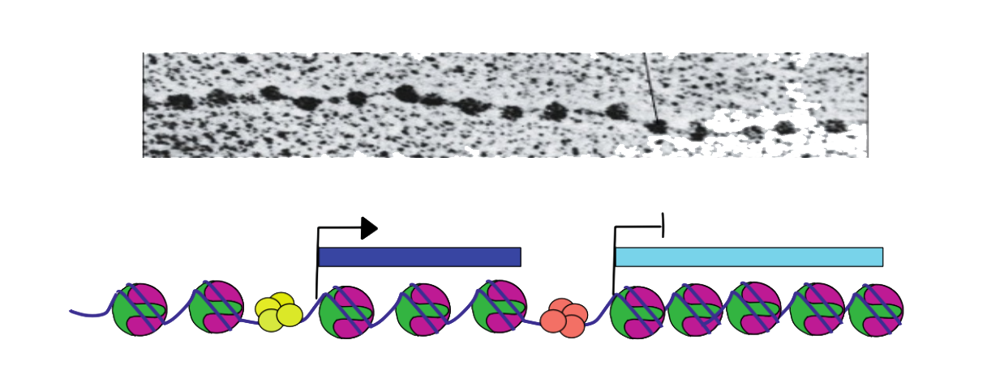
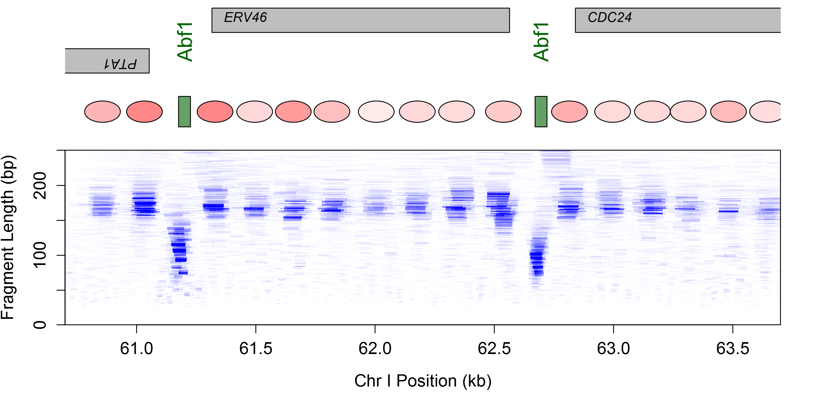
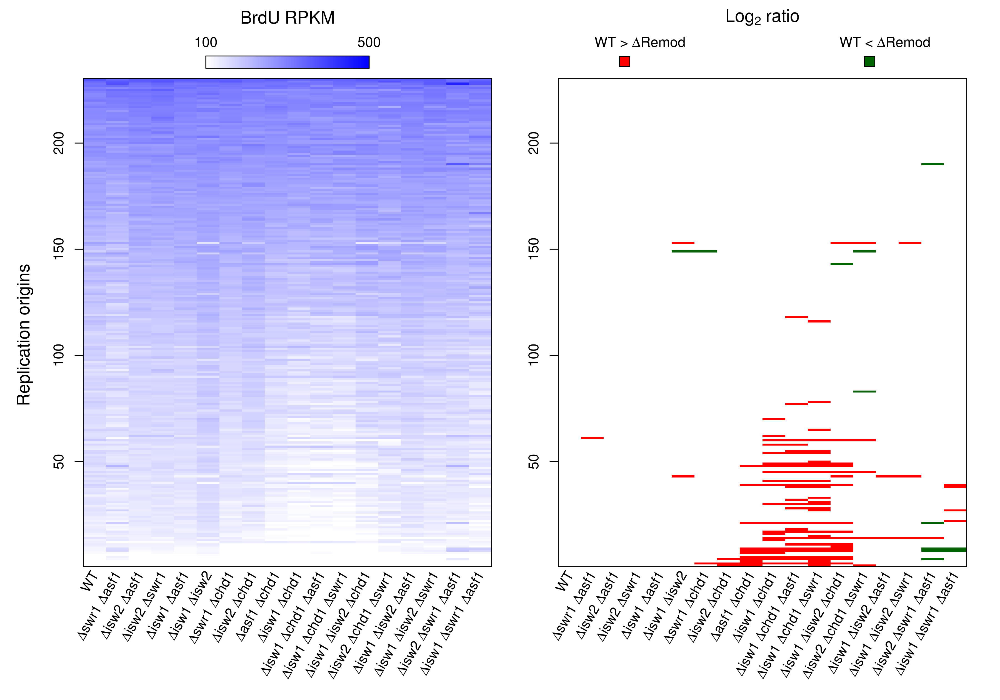
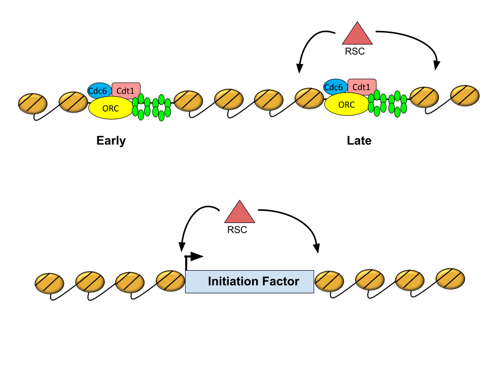
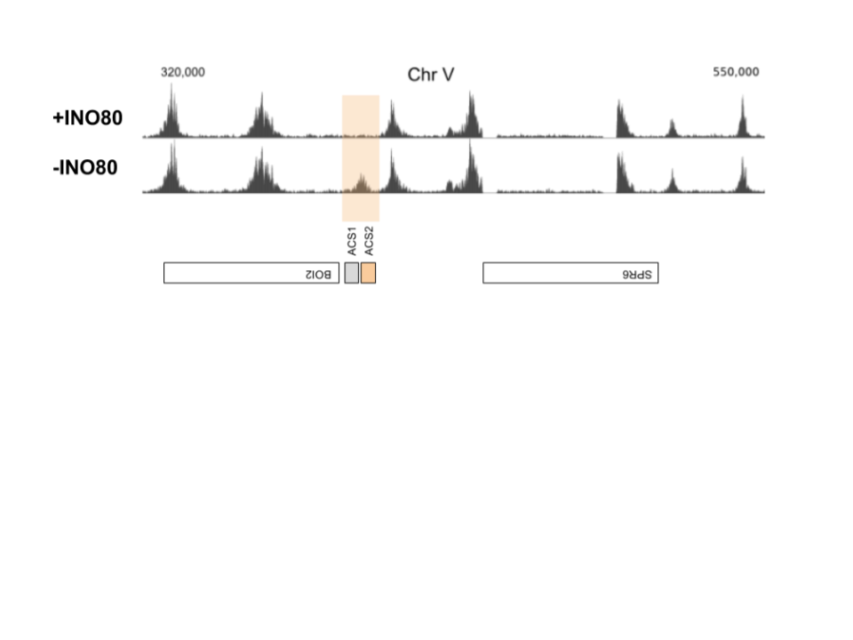
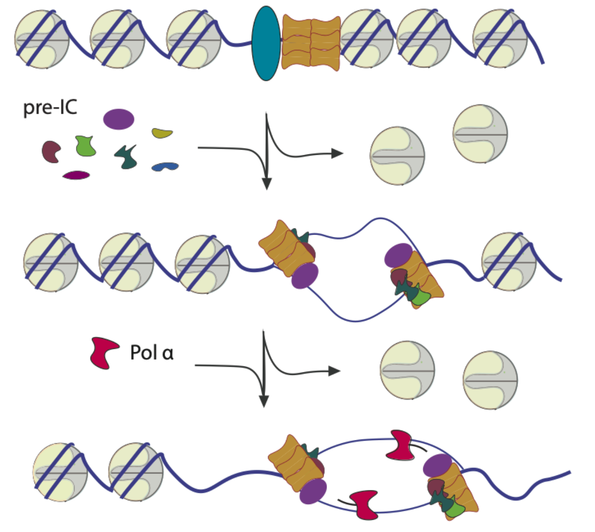

Mechanisms of genetic and epigenetic inheritance
Department of Pharmacology and Cancer Biology
Duke University School of Medicine
Duke 2019
It has not escaped our notice that the specific pairing we have postulated immediately suggests a possible copying mechanism for the genetic material.
Multiple start sites of DNA replication
Passero et al., Genes and Development, 2002
Pre-RC assembly
Pre-RC assembly
Pre-RC assembly
Sequence determinants of replication origins
Replication is dynamic
Model systems
Sara's paradox
Sara Powell, UPGG
MCM paradox summary
Powell et al., EMBO, 2015
Yulong's modification

Yulong Li, MCB
H4K20me1 maintains the genomic integrity of late replicating regions
Li et al., NAR, 2016
Model systems
Jason's footprint


Jason Belsky, CBB
MNase 'footprinting' the genome

Henikoff et al., PNAS 2011
MNase 'footprinting' the genome

Henikoff et al., PNAS 2011
MNase 'footprinting' the genome


Chromatin occupancy at nucleotide resolution

Chromatin occupancy at nucleotide resolution
Chromatin regulation of CIK1

No mating pheromone
Chromatin regulation of CIK1

Mating pheromone
Chromatin remodeling at replication origins

Belsky et al., Genes & Development, 2015
Heather's remodeler
Heather MacAlpine
Chromatin remodelers implicated in DNA replication
Chromatin remodeling and the DNA replication program
Mapping early origin activity

Mapping early and late origin activity
Origin activation in a mrc1 background
Origin activation in double chromatin remodeler mutants
Origin activation in triple chromatin remodeler mutants
CHD1 and ISW1 promote activation of inefficient origins
CHD1 and ISW1 promote activation of inefficient origins
Origin activation in the absence of essential chromatin remodelers

Origin activation in the absence of essential chromatin remodelers
Origin activation in the absence of essential chromatin remodelers
Origin activation in the absence of essential chromatin remodelers
RSC promotes late origin activation
RSC promotes late origin activation
INO80 suppresses cryptic origin activation
INO80 suppresses cryptic origin activation
INO80 suppresses cryptic origin activation
INO80 suppresses cryptic origin activation
Model of crytpic origin suppression by INO80
Genetic inheritance
Epigenetic inheritance
Mónica's assembly

Mónica Gutiérrez, UPGG
Chromatin assembly behind the replication fork
Questions
- Are there locus-specific differences in chromatin maturation?
- Are there factor-specific differences in chromatin maturation?

NCOP - nascent chromatin occupancy profiling
Nascent chromatin is disorganized

Nascent chromatin is disorganized

Locus-specific differences in maturation
Epigenetic signature of fast chromatin maturation


Nucleosome occupancy

Nucleosome occupancy

Transcription displaces nucleosomes
Chromatin occupancy restricts motif access

TF occupancy in nascent and mature chromatin
Transient or promiscuous TF occupancy
Promiscuous TFs are not restricted to promoters
Chromatin assembly at the replication fork

Gutiérrez et al., Genome Research, 2019
Vinay's break

Vinay Tripuraneni
Vinay's DSB

Vinay Tripuraneni, PHARM MSTP
Broad nucleosome eviction surrounding a DSB

Tsukuda et al., Nature 2005
Introduction of a site-specific break at PHO5
Introduction of a site-specific break at PHO5

Introduction of a site-specific break at PHO5

MRX-dependent broad eviction of nucleosomes

Chromatin occupancy profiling

Chromatin changes at control loci

Chromatin flanking a DSB break at PHO5

Chromatin flanking a DSB break at PHO5

Chromatin flanking a DSB break at PHO5

Histone eviction surrounding a break at PHO5

Histone eviction summary

Histone eviction summary

MRE11 facilitates eviction of the 1L nucleosome

Restoration of chromatin following NHEJ?

Restoration of chromatin following NHEJ?
Chromatin dynamics during NHEJ
Chromatin dynamics during NHEJ

Replication independent restoration of chromatin following NHEJ

Rachel's initiation


Rachel Hoffman, UPGG
Bonnie's eATAC

Boning Chen, MCB
Acknowledgements
| MacAlpine Lab | Collaborators |
|---|---|
| Mónica Gutiérrez | Jim Haber (Brandeis) |
| Heather MacAlpine | Steve Bell (MIT) |
| Yulong Li | Chris Counter (Duke) |
| Vinay Tripuraneni | Alex Hartemink (Duke) |
| Rachel Hoffman | Greg Crawford (Duke) |
| Bonnie Chen | Funding |
| NIH/NIGMS |